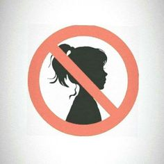

The narrative of women breaking men's hearts is as old as time, woven into the fabric of countless stories, songs, and pieces of art throughout history. It speaks to the universal experience of love and loss, yet this theme, when examined closely, reveals much about societal attitudes, gender roles, and the evolving dynamics of romantic relationships. It's crucial to approach this topic with sensitivity and an understanding that emotional vulnerability and heartbreak are human experiences, not confined to any one gender. However, the portrayal of women as heartbreakers often carries with it a wealth of cultural stereotypes and biases that deserve scrutiny.
Historically, literature and media have played significant roles in perpetuating the idea of the femme fatale or the woman whose beguiling charm leads men to their downfall. This archetype reinforces the notion of male vulnerability being exploited by female cunning, a deeply gendered stereotype that overlooks the complexities of human emotions and relationships. In reality, the dynamics of who hurts whom in a relationship are not predicated on gender but on individual circumstances, personalities, and actions. The narrative of women breaking men's hearts often simplifies these dynamics, casting women in a villainous role and men as hapless victims, which does a disservice to both genders.

This trope also intersects with societal expectations of masculinity and femininity. Men are frequently taught to suppress their emotions, adhering to a stoic ideal of manhood that leaves little room for the expression of pain or vulnerability. The impact of a broken heart, therefore, can be particularly profound for men who find themselves navigating the uncharted waters of emotional turmoil without the societal permission or tools to process these feelings openly. On the other hand, women who assert their autonomy by leaving unsatisfying or unhealthy relationships may be unfairly labeled as heartbreakers, ignoring their right to pursue happiness and well-being. This dichotomy reflects deeper issues related to how society values and interprets male and female emotions and actions within the context of romantic relationships.
Moreover, the conversation about heartbreak and its aftermath has evolved with the advent of digital technology and social media. The visibility of personal lives and relationships has never been higher, amplifying the potential for emotional distress and misconceptions about breakups. Social media can serve as a double-edged sword, providing a platform for support and solidarity but also for harassment and the perpetuation of harmful stereotypes about women who end relationships. In this digital age, the narrative of women breaking men's hearts can be both amplified and challenged, offering new avenues for understanding and empathy.
It's also worth considering the role of self-reflection and personal growth that can emerge from the experience of heartbreak. While the pain of a relationship ending can be acute, it also offers opportunities for learning and development. Heartbreak challenges individuals to reassess their needs, boundaries, and expectations in relationships. It can catalyze a journey of self-discovery, leading to a deeper understanding of one's own capacity for resilience and growth. Viewing heartbreak not as a definitive end but as a transition can mitigate the gendered blame game and open the door to more nuanced discussions about compatibility, communication, and mutual respect in relationships.
This exploration into the dynamics of heartbreak and the stereotypes surrounding women who are perceived as heartbreakers opens the door to broader discussions about emotional literacy and the importance of nurturing emotional resilience in both men and women. Emotional literacy, the ability to understand and articulate one’s feelings, is a critical skill in navigating not just romantic relationships, but all forms of interpersonal connections. Cultivating this skill can dismantle harmful stereotypes by encouraging open communication and mutual understanding, thereby reducing the likelihood of misunderstanding and emotional pain. It prompts a shift away from viewing heartbreak through a lens of blame and victimhood, towards a perspective that values growth, empathy, and personal accountability.
Furthermore, the narrative of women breaking men’s hearts often fails to acknowledge the societal pressures and constraints placed on women in relationships. Women are frequently subjected to unrealistic expectations—to nurture, to appease, and to conform to an idealized version of femininity that prioritizes others' needs above their own. When a woman chooses to leave a relationship that doesn’t fulfill her, it’s not merely an act of heartbreak but a declaration of autonomy and self-respect. Recognizing this requires a critical examination of the ways society socializes women and men into their respective roles in relationships and how these roles can contribute to dissatisfaction and ultimately, heartbreak.
In the pursuit of more equitable romantic relationships, it's essential to challenge the traditional narratives that frame women as the culprits of emotional distress. This involves promoting a culture where men are encouraged and supported in expressing vulnerability without fear of emasculation. It also means advocating for women’s right to pursue their happiness and well-being without being stigmatized. Creating spaces for open dialogue about feelings, desires, and relationship expectations can mitigate the misunderstandings that often lead to heartbreak. Such conversations can also serve as a foundation for relationships built on mutual respect, understanding, and genuine connection.
Moreover, the media plays a pivotal role in shaping perceptions about relationships and heartbreak. By promoting more diverse and nuanced portrayals of love, loss, and everything in between, media can help deconstruct the outdated stereotypes that limit how men and women navigate their emotional lives. Highlighting stories that reflect the complexities of relationships and the multifaceted nature of heartbreak can foster a more compassionate and realistic understanding of what it means to love and lose.
In conclusion, transcending the trope of women breaking men’s hearts requires a collective effort to reimagine the narratives around love, loss, and emotional resilience. By promoting emotional literacy, challenging societal norms, fostering open communication, and advocating for diverse media representations, we can create a culture that views heartbreak not as a battlefield divided by gender, but as a shared human experience that holds the potential for growth, healing, and deeper connection. In doing so, we pave the way for healthier, more fulfilling relationships that are based on equality, mutual respect, and the freedom for all individuals, regardless of gender, to express their emotions and needs openly and without fear of judgment.